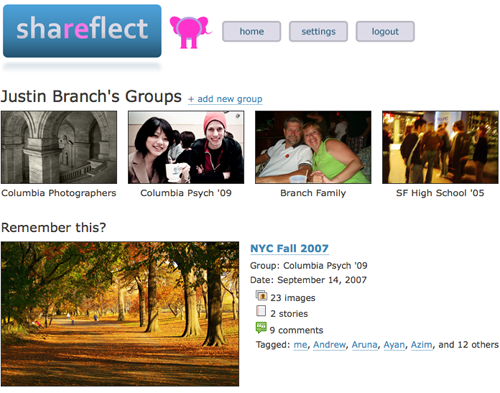

A social website for groups to collect shared experiences.
I pushed the group to be a little ambitious with this personalized website project, and we decided to focus on the idea of "collecting experiences" within a group. We each belong to many different social groups, whether we consciously realize it or not, and facilitating that group bonding is not something that social networking sites currently achieve. A key insight was allowing users to share stories about events with the option to incorporate the posted photographs and videos. Our functional prototype allows for limited ability to move between different screens and get an idea of how groups and events are set up to allow anyone to share and reflect on group experiences.